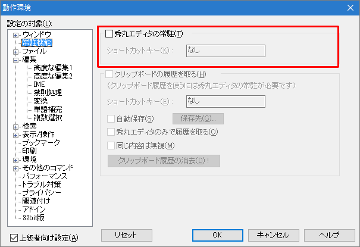

- Windowsが起動した直後に（無題）の秀丸エディタが勝手に開き、困っています。

スタートアップにあるショートカットの設定がおかしいのが原因です。 (本来は最小化で起動され、通知領域に格納されます。)
「動作環境」→「常駐機能 → 秀丸エディタの常駐」で設定を変更する事で、再設定が可能です。
動作環境ダイアログを閉じる際に、この設定に従い、スタートアップのショートカットを削除/作成します。 設定を一度OFFに設定して「OK」を選択後、再度「動作環境」-「秀丸エディタの常駐」をONに設定してください。 ショートカットが再作成されます。
